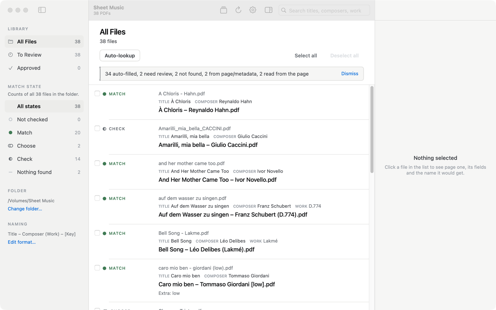
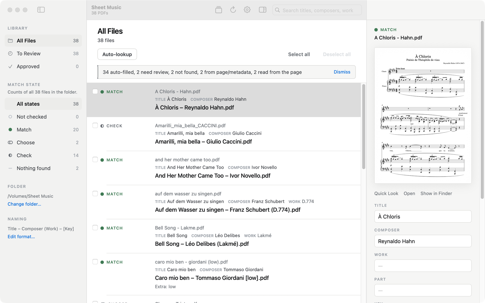
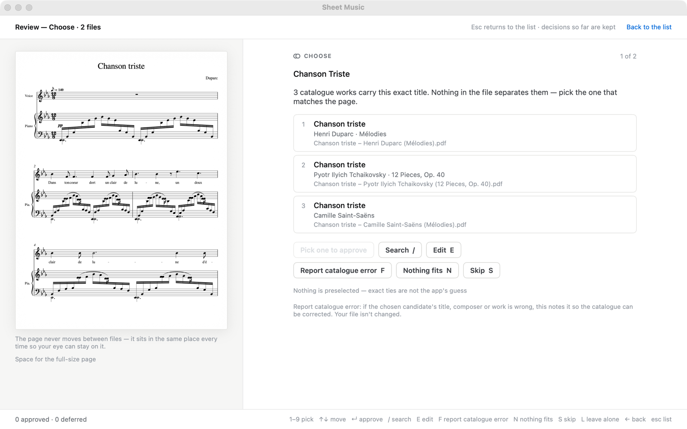
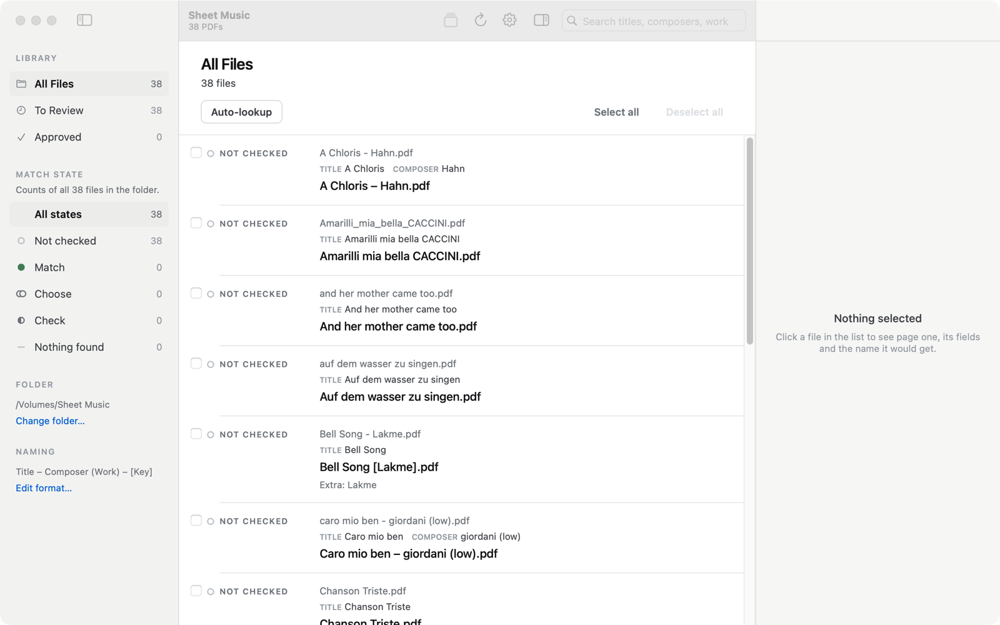
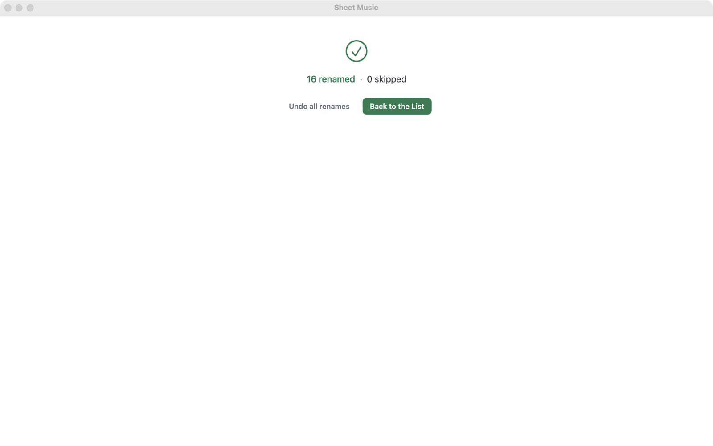

Batch rename
Scan a folder, match every filename against the catalogue, propose new names. You review before anything changes.
Point ScoreSifter at a folder of messy PDFs. It reads the filenames, matches them against a 54k-piece catalogue, reads page one when a filename says nothing, and renames everything to a clean, consistent format — with metadata written into every file. Offline, reviewable, reversible.
§ Note from the developer — July 2026
I use ScoreSifter on my own library, and in its current form it doesn't go far enough. Matching from filenames alone means a file called Scan_047.pdf yields nothing useful — and a lot of real libraries look exactly like that.
The next version reads the page instead of the filename: title, composer, and work where a subtitle gives it. Key detection stays on the back burner until it can be trusted. Everything else is unchanged — free, offline, preview-then-commit, nothing renamed without your say-so.
— Derek Hill, Kairovo
A local-first database of art song, opera arias, lieder and musical theatre — embedded in the app. No network call. No account. No sync.
Everything ScoreSifter does happens on your machine. It never uploads your files or phones home.
Scan a folder, match every filename against the catalogue, propose new names. You review before anything changes.
Writes title, composer, work and key directly into each PDF — compatible with forScore, MobileSheets and other music PDF readers that parse standard metadata.
Pick a preset or write your own. {title}, {composer}, {work}, {key} — with optional segments using [? … ?].
When a filename says nothing (Scan_047.pdf), ScoreSifter reads the title and composer from page one, scans included. It still cleans up IMSLP noise, shop codes and duplicate suffixes.
Art song, opera arias, lieder and musical theatre — embedded in the app. No internet required for the vast majority of lookups.
When the catalogue doesn't know a piece, ScoreSifter asks MusicBrainz and Open Opus, sending only the title and composer. You decide whether to accept each result.
Every rename run is logged with old → new pairs. Undo straight away, or later with Library ▸ Undo Last Renames, even after the app was closed.
No account. No cloud. Catalogue ships with the binary. Works on a plane, in a studio with no wifi, anywhere.



Every rename run is preview-then-commit. You see the exact change before it touches disk.
Drag in a directory of PDFs. ScoreSifter walks it, parses every filename, and extracts title, composer and key signals.

Each file is checked against the embedded catalogue. High-confidence matches are flagged; anything uncertain is queued for your review.
Every proposed rename shows old vs new. Edit any field, override the template, skip individual files. Nothing changes until you say so.
ScoreSifter renames the approved files and writes metadata into every PDF, adding to the end of the file so nothing in it is lost. Undo puts the old names back, straight away or later.

A sensible default and ready-to-go patterns. Or write your own with optional segments. A key goes in the name only when your filename states it.
No trial, no paywall, no account. Use it on as many machines as you want.
ScoreSifter is the tool that convinced me the rest of Kairovo was worth building. It's also the most useful thing I could give back to the music community — a tidy score library makes every other tool work better.
It's also genuinely a one-off utility. Run it once on your library, maybe again when a new folder arrives — and that's it. Once your files are clean, you probably won't need it again. There's nothing to subscribe to because there's nothing ongoing to pay for.
Recital Atlas, AriaDesk and Vocemetry fund the studio.
The download starts straight away; Buttondown opens in a new tab. We'll email you once to ask if you'd like occasional news of ScoreSifter and the other Kairovo apps; if you don't confirm, you're not added. Privacy
Signed and notarised by Apple — opens without a security warning.
There are no servers to pay for and no catch — but if ScoreSifter saved you an afternoon of renaming, buying a coffee is a nice way to say so.
Buy me a coffee →ScoreSifter is part of the Kairovo suite — quiet, durable desktop software for people who work in music.
Recital Atlas, AriaDesk and Vocemetry are the paid apps that fund everything. If you find ScoreSifter useful, they're worth a look.
Browse the suite →§ Newsletter
Sent when something ships — a new app, a significant update, occasionally a note on what's being built and why. No cadence, no filler.
Subscribers get early access to betas across the full Kairovo suite.
Sent rarely. Unsubscribe any time. No tracking pixels.